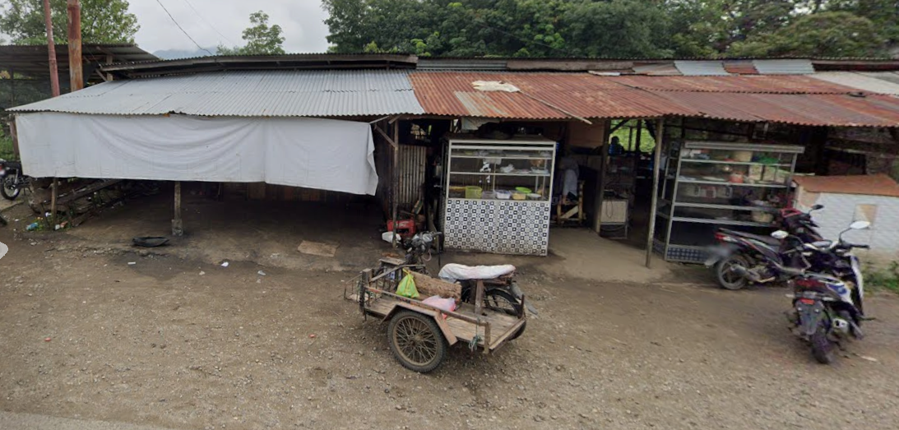

<!doctype html>
<html lang="en">
  <head>
    <meta charset="UTF-8" />
    <meta name="viewport" content="width=device-width, initial-scale=1.0" />
    <title>Peta Psdku Tanah Datar</title>
    <link rel="stylesheet" href="dist/leaflet.css" />
    <script src="dist/leaflet.js"></script>
    <style>
      #map {
        position: absolute;
        top: 0;
        bottom: 0;
        left: 0;
        right: 0;
      }
    </style>
  </head>
  <body>
    <div id="map"></div>

    <script>
      var map = L.map("map").setView([-0.504861853, 100.779074], 17);

      L.tileLayer(
        "https://api.maptiler.com/maps/outdoor-v4/{z}/{x}/{y}.png?key=VMd1gieKnl5V7Z3FAPeW",
        {
          tileSize: 512,
          zoomOffset: -1,
          minZoom: 1,
          attribution:
            '<a href="https://www.maptiler.com/copyright/" target="_blank">&copy; MapTiler</a> <a href="https://www.openstreetmap.org/copyright" target="_blank">&copy; OpenStreetMap contributors</a>',
        },
      ).addTo(map);
      var lokasi = [
        [
          -0.5048618530559519,
          100.779074046302,
          "gambar/school.png",
          "PSDKU Tanah Datar",
          `<p style = "text-align: center;"></P>
           <p>Politeknik Negeri Padang (PNP) Kampus Tanah Datar merupakan wujud nyata komitmen PNP dalam memperluas akses pendidikan tinggi vokasi berkualitas di Sumatera Barat.
           Berlokasi di Kabupaten Tanah Datar, kampus ini hadir untuk mencetak tenaga kerja profesional, terampil, 
           dan siap pakai yang mampu menjawab tantangan industri di tingkat regional maupun nasional.
           <p><a href ="https://ti.pnp.ac.id/">Baca Selengkapnya</a></p>`,
        ],
        [
          -0.5072310434982953,
          100.78084579394502,
          "gambar/graduate.png",
          "SMAN 2 Lintau",
          `<p style = "text-align: center;"></P>
           <p>SMAN 2 Lintau merupakan salah satu sekolah menengah atas yang terletak di Kabupaten Tanah Datar, 
            Sumatera Barat. Sekolah ini dikenal dengan komitmennya terhadap pendidikan berkualitas dan pengembangan 
            potensi siswa. Dengan fasilitas yang memadai dan tenaga pengajar yang kompeten, SMAN 2 Lintau berusaha
            menciptakan lingkungan belajar yang inspiratif dan mendukung pertumbuhan akademis serta karakter siswa.</p>
            <p><a href ="https://sman2-lintaubuo.sch.id/">Baca Selengkapnya</a></p>`,
        ],
        [
          -0.5063466774322939,
          100.7784020553943,
          "gambar/hospital.png",
          "Klinik(Req Adil)",
          `<p style = "text-align: center;"></P>
           <p>Klinik Req Adil adalah sebuah fasilitas kesehatan yang terletak di Kabupaten Tanah Datar, Sumatera 
            Barat. Klinik ini menyediakan berbagai layanan medis untuk masyarakat setempat, termasuk pemeriksaan 
            kesehatan, pengobatan, dan konsultasi medis. Dengan tenaga medis yang profesional dan fasilitas yang
             memadai, Klinik Req Adil berkomitmen untuk memberikan pelayanan kesehatan yang berkualitas kepada pasiennya.</p>`,
        ],
        [
          -0.5037633969178695,
          100.778774434602,
          "gambar/graduate.png",
          "SMKN 1 Lintau",
          `<p style = "text-align: center;"></P>
           <p>SMKN 1 Lintau merupakan salah satu sekolah menengah kejuruan yang terletak di Kabupaten Tanah Datar,
           Sumatera Barat. Sekolah ini dikenal dengan program pendidikan vokasi yang berkualitas, menyediakan berbagai
           jurusan keahlian untuk mempersiapkan siswa menghadapi dunia kerja. Dengan fasilitas yang lengkap dan tenaga 
           pengajar yang berkompeten, SMKN 1 Lintau berkomitmen untuk menciptakan lingkungan belajar yang mendukung pengembangan 
           keterampilan dan pengetahuan siswa.</p>
           <p><a href ="https://smkn1lintaubuo.sch.id/">Baca Selengkapnya</a></p>`,
        ],
        [
          -0.5024833926796046,
          100.77761074957786,
          "gambar/workshop.png",
          "Bengkel Motor Acing",
          `<p style = "text-align: center;"></P>
          <p>Bengkel Motor Acing adalah sebuah bengkel yang menyediakan layanan perbaikan dan pemeliharaan kendaraan
          bermotor. Dengan tim mekanik yang berpengalaman dan fasilitas yang lengkap, Bengkel Motor Acing berkomitmen 
          untuk memberikan pelayanan terbaik kepada pelanggan, memastikan kendaraan mereka tetap dalam kondisi prima 
          dan aman untuk digunakan di jalan.</p>`,
        ],
        [
          -0.5053016757160439,
          100.77856458139544,
          "gambar/mosque.png",
          "Masjid Nurul",
          `<p style = "text-align: center;"></P>
          <p>Masjid Nurul adalah sebuah masjid yang terletak di Kabupaten Tanah Datar, Sumatera Barat. Masjid ini 
          dikenal dengan arsitektur yang indah dan suasana yang tenang, menyediakan tempat ibadah yang nyaman bagi 
          jamaahnya.</p>`,
        ],
        [
          -0.5049727826283888,
          100.77800394641729,
          "gambar/furniture.png",
          "Dzaza Furniture",
          `<p style = "text-align: center;"></P>
           <p>Dzaza Furniture adalah sebuah toko furnitur yang menyediakan berbagai macam furnitur untuk kebutuhan 
           rumah tangga. Dengan desain yang modern dan kualitas yang terjamin, Dzaza Furniture menjadi pilihan tepat 
           bagi pelanggan yang mencari furnitur berkualitas tinggi.</p>`,
        ],
      ];

      for (var i = 0; i < lokasi.length; i++) {
        var tIcon = L.icon({
          iconUrl: lokasi[i][2],
          iconSize: [40, 40],
          iconAnchor: [20, 40],
          popupAnchor: [0, -40],
        });

        var marker = L.marker([lokasi[i][0], lokasi[i][1]], {
          icon: tIcon,
        })
          .addTo(map)
          .bindTooltip(lokasi[i][3]);
        if (lokasi[i][4]) {
          marker.bindPopup(lokasi[i][4]);
        }
      }
    </script>
  </body>
</html>
